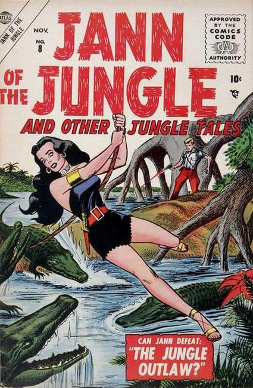

Jann of the Jungle

Series: 10 issues 1955-1957
Publisher: Marvel
Written by Don Rico
Illustrations by Jay Scott Pike
Numbering continues from Jungle Tales (Marvel, 1954 series) #7
- "Jungle Outlaw!" A communist agent is drugging the wildlife and making them all dangerous in order to keep everyone away from a secret uranium mine.
- "Pool of Doom!" Waku's chieftanship is threatened until he unblocks the stream that provides water for the Bantus.
- "Leopard Lure" text story.
- "The Hunter and the Hunted!" A lion pursues an otter.
- "Most Dangerous Game!" Cliff teaches a woman hunter that the most dangerous game in the jungle is the Cape buffalo.